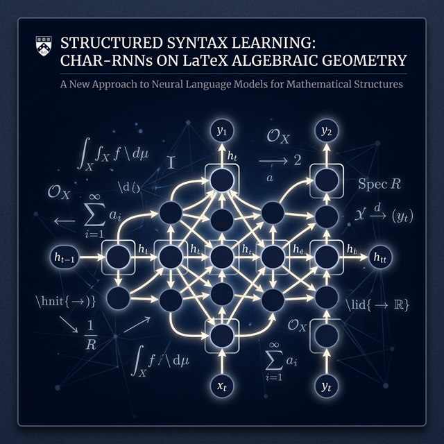
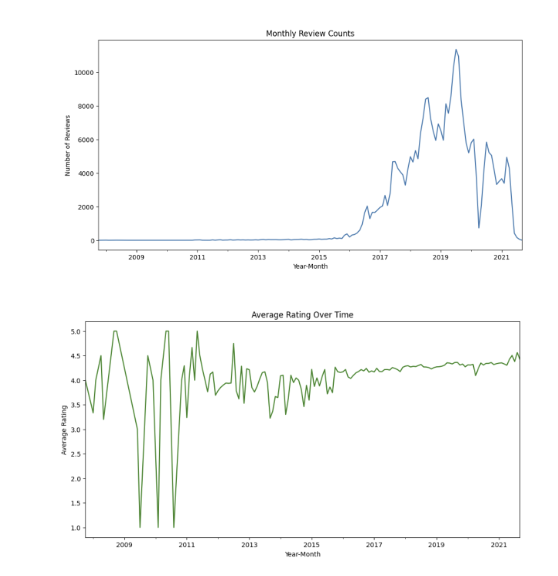
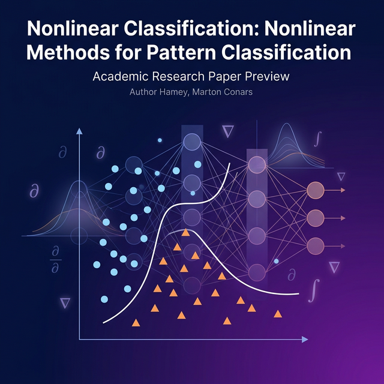

Research Interests
My research is centered on brain-inspired machine learning, with a focus on latent dynamical modeling, spatiotemporal representation learning, and manifold learning in latent space. I am motivated by how intelligent systems can learn structured internal representations of complex environments—capturing temporal evolution, spatial dependencies, and geometric structure—rather than surface-level pattern matching. My current work targets structured latent dynamics for neural signals (e.g., BOLD and functional connectivity), exploring constrained Koopman operators and geometric structure (such as Lie groups) for interpretable, stable representations. I aim to develop frameworks that bridge neural data analysis with questions of representation, adaptation, and brain-inspired intelligence.
Publications & Papers


